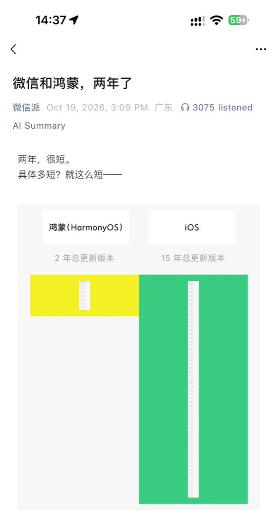
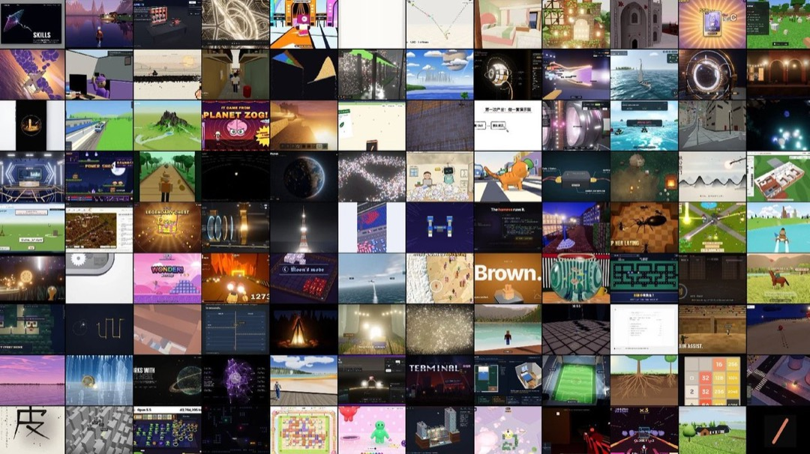
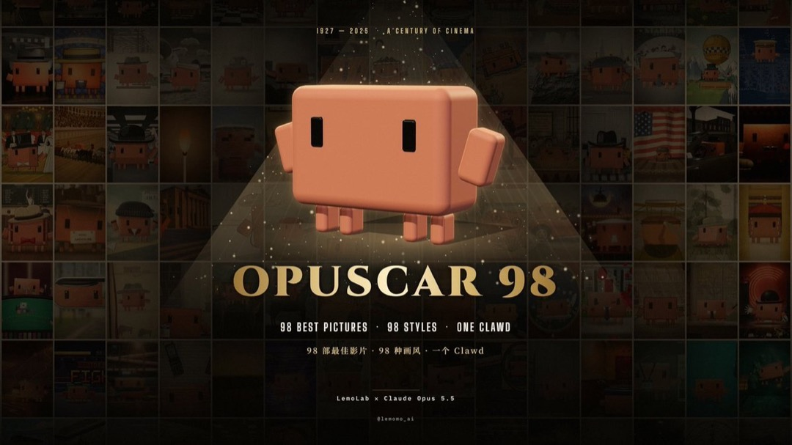
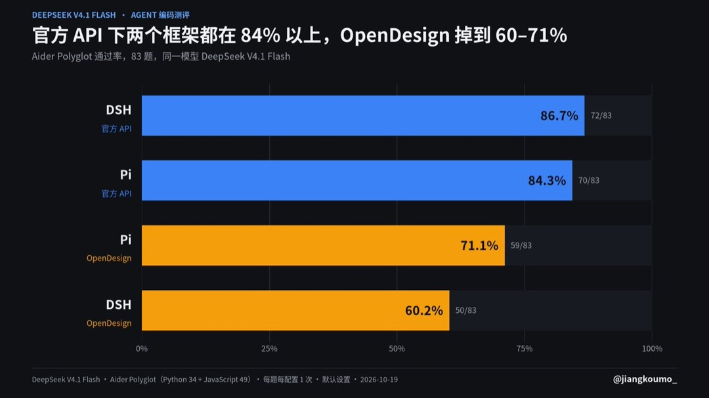
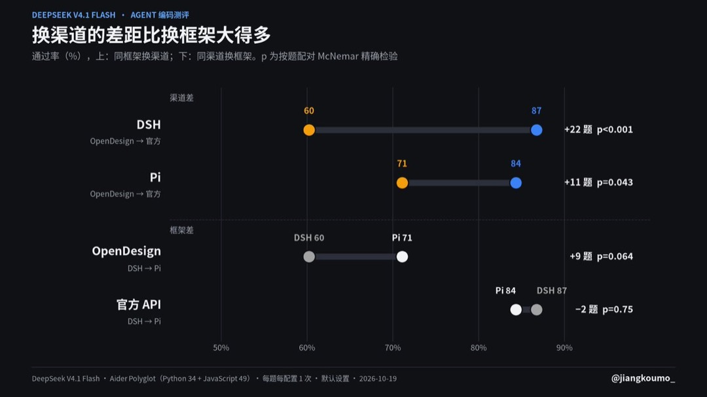
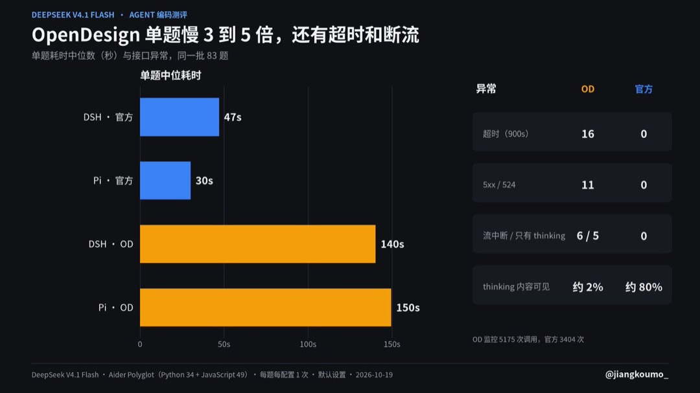
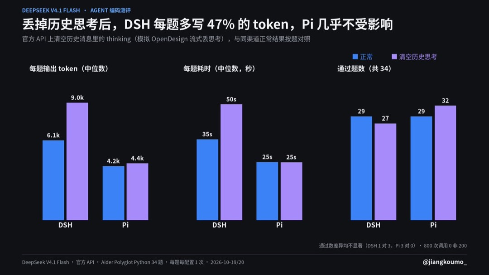
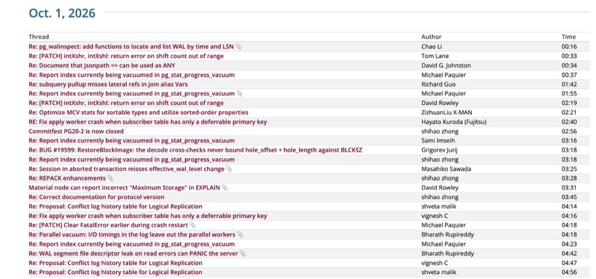

本期速览
03 CleanYourTV免Root定制电视
04 os-taxonomy开源教育知识图谱
05 Cloudflare开源安全审计工具
06 DeepSeek同模型不同渠道性能差近倍
07 PG 19因AI审查发现真Bug延期
01｜微信鸿蒙版两年走完iOS版15年路
来源（X） · @abskoop · 2026-10-20 14:42
这不是简单就能做到的事情🤡

02｜四个开源库覆盖Opus 5.5视频全流程
来源（X） · @czzzzzzJ_ · 2026-10-19 15:38
完整地看一下这四个开源仓。
从跟做到拆工程都够用：
1. lemo-opuscar — 多风格提示词 + 纯代码样片，填故事让 AI 导演短片
https://github.com/lemomo-ai/lemo-opuscar
2. awesome-opus5-5-videos — Opus 5.5 成片合集，附创作者 Prompt（HTML/Canvas/SVG/Three.js）
https://github.com/yihui-dev/awesome-opus5-5-videos
3. PDoomVideo — 完整 MV 工程（源码/分镜/渲染），适合研究复杂动画
https://github.com/JohnHeibel/PDoomVideo
4. opus-video-prompts — 约 54 个可复制案例，中文友好，新手先从这个啃
https://github.com/joeseesun/opus-video-prompts


03｜CleanYourTV免Root定制电视
来源（X） · @yyyole · 2026-10-20 11:59
用Claude Code把老安卓电视，改成平替Apple TV!
之前也考虑过用AI给电视刷系统，没想到可以这么简单！
流程大致分这几步👇
1、电脑和电视连同一个 Wi-Fi，电脑上准备好 Claude Code。
2、打开电视的调试功能：进入设置 → 关于，在“版本号 / Build”上连续按 7 次，开启开发者选项，再打开 USB 调试；如果有网络 / ADB 调试，也一起开启。不同机型打开方式不一样，下面整理了常见型号的打开方法！
3、复制项目里的 PROMPT.md 提示词，粘贴给 Claude Code，告诉它电视品牌和型号，在电视弹窗上允许电脑连接。
4、告诉 AI 哪些功能要保留：常用 App、首页快捷入口、语音助手、投屏等。它会先备份，再按你的确认停用多余组件，安装新桌面并检查效果。
5、最后用遥控器验收：试试首页、视频播放、音量和 HDMI 切换。保留修改清单与恢复脚本，完成后关闭调试功能。
全程不需要 Root，项目采用“停用而非卸载”的方式清理预装组件。先核对自己的机型，再跟着提示操作即可。
项目地址：
https://github.com/Gathin23/cleanyourtv
04｜os-taxonomy开源教育知识图谱
来源（X） · @Ryrenz · 2026-10-20 09:02
os-taxonomy 今年 7 月才建的仓库，现在 5881 star、986 个 fork，这个 fork 比例说明是真有人在拿它搭东西。
做教育类产品最头疼的不是界面，是知识结构。你想加一个自适应学习的功能，就得先回答「这孩子到底卡在哪一步」，而这需要一张完整的先修关系网——通常得请教研团队花几个月人工梳理，还未必梳理得全。
os-taxonomy 直接把这张网给了你：1590 个细粒度知识点、3221 条先修依赖，整理成有向无环图，每条边还标了是 hard 还是 soft 依赖并写明理由。覆盖科学、数学、英语、历史等 8 个学科，每个知识点都带稳定标识符、掌握证据标准、评估提示和大致适龄区间，并链接到 NGSS、Common Core、英国国家课程这些来源。另外还有 183 段专门写给家长看的领域总结。
许可也交代得很清楚：数据库部分 ODbL 1.0，Marble 自己写的文本部分 CC BY-SA 4.0，研究和商用都行，署名加上、衍生数据库保持开放就可以，基于它做出来的产品本身不用开源。这一版里没有嵌入向量，也没有任何孩子的个人数据。
教研的底稿被人无偿摊开，这事比多一个 App 有用。
GitHub：https://github.com/withmarbleapp/os-taxonomy
05｜Cloudflare开源安全审计工具
来源（X） · @slashui · 2026-10-20 07:54
Cloudflare 把自家内部用来“找漏洞”的那套 Skill 直接开源了。现在你也可以让自己的 coding agent 对着代码库跑一遍真正的安全审计。
它分 6 个阶段干活： 先把整个代码库摸清楚 → 一块一块扫，不漏死角 → 每个发现都丢给一个全新的、没参与过扫描的 agent 独立复核 → 写出结构化结果 → 再独立验一遍 → 最后出报告。
你拿到的不是一堆噪音，而是一份分好优先级的 findings：已确认、待验证、已驳回。先修真正的问题，别被假阳性拖死。
https://github.com/cloudflare/security-audit-skill
06｜DeepSeek同模型不同渠道性能差近倍
来源（X） · @jiangkoumo_ · 2026-10-20 00:40
发现可能不同渠道会比换不同Agent 框架带来的影响大得多
在官方 API 上：DSH 72 题，Pi 70 题，基本打平（按题配对检验 p=0.75）
使用OpenDesign 订阅：Pi 59 题，DSH 50 题，Pi 反而领先 9 题
同一个框架只换渠道：DSH 从 50 升到 72（p<0.001），Pi 从 59 升到 70（p=0.043）DSH 受渠道影响差不多是 Pi 的两倍
首先先排除版本问题：我另做了指纹测试，两个渠道 16 道题各答 3 遍，答案全部一致；温度 0 下长回答开头能逐字重合几百字，OpenDesign 用的就是官方现在的 1017（顺带发现 OpenDesign 不遵守 max_tokens 限制）
一个可能的原因是：OpenDesign 流式返回里约 98% 的 thinking 是空的。我在官方 API 上把历史消息里的思考清空复现了一下（Python 34 题）：DSH 每题输出 token 中位数从 6.1k 涨到 9.0k，耗时从 35 秒涨到 50 秒；Pi 几乎没变化，但 DSH 通过数只从 29 降到 27，不显著。所以丢思考能解释 DSH 更慢、更费 token，解释不了全部掉分，剩下的更可能来自 OpenDesign 自己的超时和 5xx
所以如果只使用 OpenDesign 订阅里的模型测测试，我可能会得出“Pi 比 DSH 强”；但是换到官方 API，这个结论就不成立了
我本次测试，每题只跑了1 次，误差大约 ±10 个百分点，所以可能会有不准确的地方，因此也只能给大家作为一个参考




07｜PG 19因AI审查发现真Bug延期
来源（X） · @mylifcc · 2026-10-20 00:30
人类辛辛苦苦写了大半年、准备发版的 PostgreSQL 19，被进化后的 AI 代码审查员直接干延期了。不是因为 AI 在制造垃圾，而是 AI 抓真 Bug 的速度，已经彻底超过了人类顶级专家修 Bug 的速度。
1️⃣ 8～10 项重磅新功能被迫回滚：包括备受期待的 SQL Property Graph Queries 在内的近十个已合并特性被紧急撤回，正式版从原定的 9-10 月推迟到 11 月 19 日。
2️⃣ 不是误报噪音，全是深层真雷：许多网友第一反应是“AI 又在刷无效工单搞 DDoS”，但核心维护者辟谣：这些全是人类写代码时漏掉的真实边缘缺陷（Edge cases）。
3️⃣ 几年的隐蔽周期被压缩成几秒：以往这类底层 C 语言边缘 Bug 往往要潜伏好几年才会在生产环境爆雷，如今前沿大模型在短短几个月内进化，把未来几年的雷一次性全扒了出来。
以前通过人类严苛审查就能上线，现在却过不了 AI 这一关。当找漏洞变成零成本，而修底层架构依然依赖极少数人类大牛，开源维护者该怎么破局？
